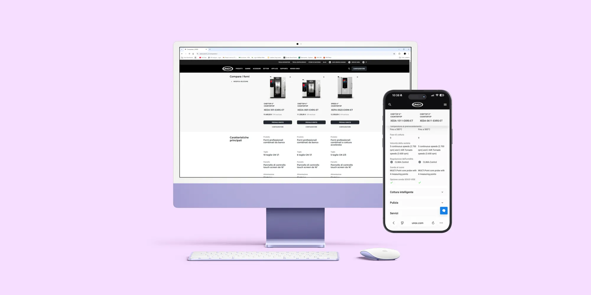
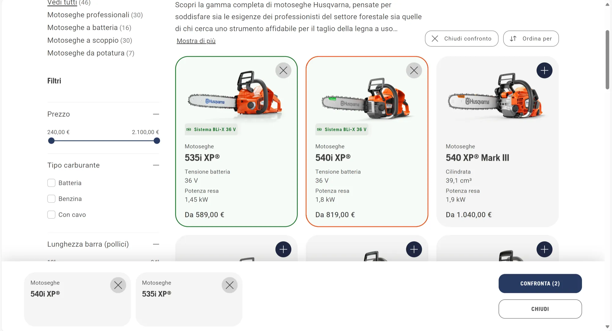
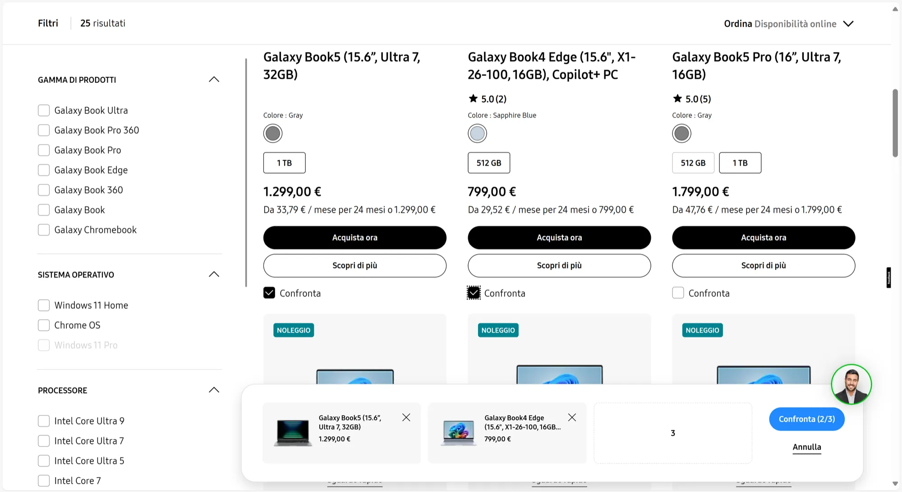
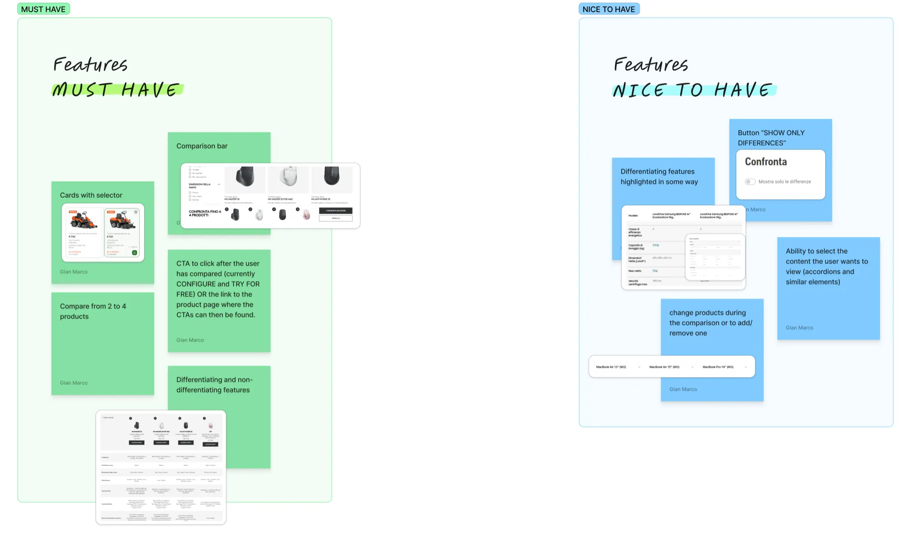
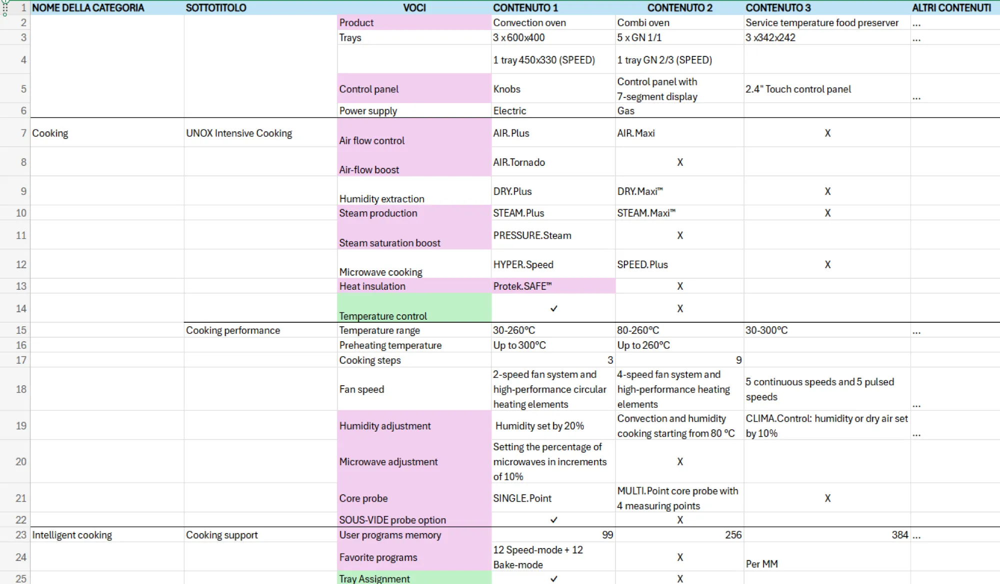
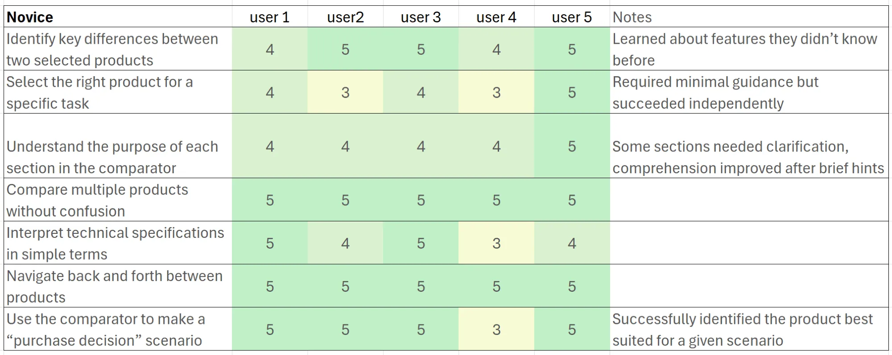
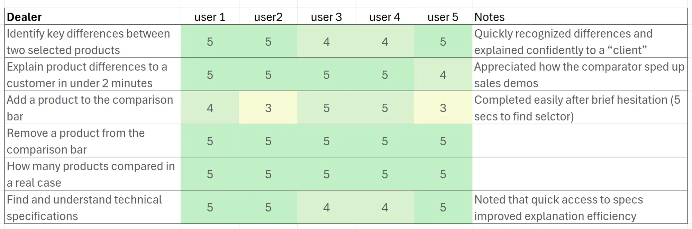
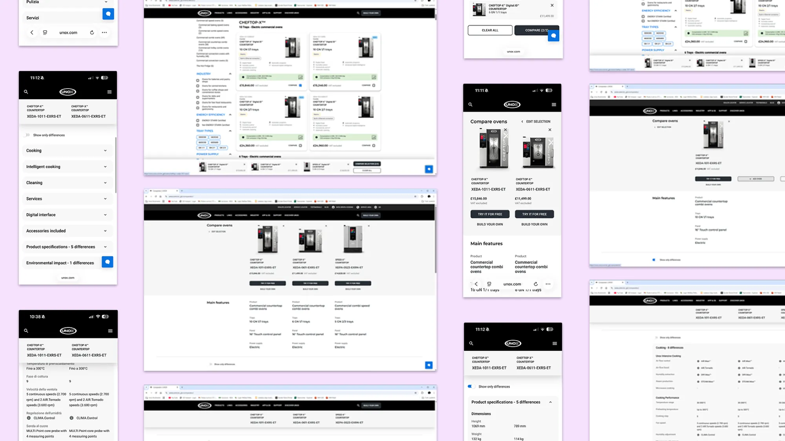
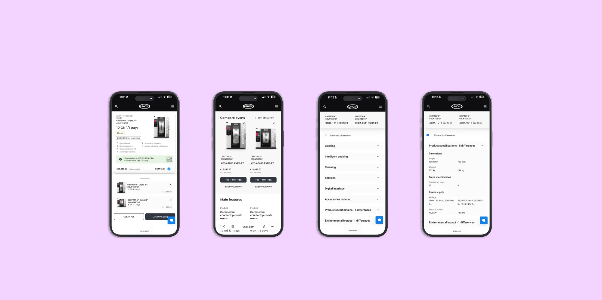

Product comparator
Helping users understand the difference between products that look way too similar.
In this project, we built a product comparator from scratch for our corporate website.
The challenge was huge, since our catalog includes over 1,000 products that often look almost identical at first glance. The comparator was one of the most requested features by both buyers and sellers, who needed a tool that could support them in the sales process and make comparisons clearer.
In the end, the project turned into a real game-changer, improving how customers understand our product range and giving the sales team a long-awaited ally.
Problem
50% of users couldn’t independently figure out the differences between products in the same range. Not exactly ideal when your catalog runs into the thousands.
Outcome
User misunderstanding dropped from 50% to just 20%. Given how technical our products are (and the fact that an expert will often still guide the purchase), the company considered this a huge success.
Benchmark & Research
Since we had never designed a product comparator before, we kicked things off with a deep dive into existing literature and a benchmark study.
We identified two main models: the “compare mode” approach, ideal for websites with just a handful of products, and the selector-plus-comparison-bar approach, recommended when dealing with larger catalogs. With over 1,000 products on our site, the choice was obvious.

Compare mode
Ideal for websites with just a handful of products

Selector-plus-comparison-bar
Recommended when dealing with larger catalogs
With over 1,000 products on our site, the choice was obviously the second one.
Defining Priorities
We defined the project’s must-haves and nice-to-haves, combining insights from our research with feedback from internal sales teams who know best the pain points customers face.

Wireframing superfast
We then moved into rapid user flows and wireframing.
Given the tight timeline, we sketched out simple, quick wireframes that were good enough to test early ideas without slowing down the process.
Content Definition
To move fast, we ran an internal card sorting session with the Inside Sales team, whose daily contact with customers gave us valuable clarity on what really mattered in the comparison experience.
It was a huge challenge to map every single case of all the differentiating items the comparator could have. Defining the type of content within the items, sometimes textual and sometimes yes/no, was crucial.

User Testing
We conducted tests with 10 participants across two groups: seasoned dealers who guide customers through the buying process, and professional cooks less familiar with oven technology.
The latter showed us something exciting: not only were they able to identify differences, they were also learning about product features they hadn’t known before. The dealers, on the other hand, loved how the tool accelerated their ability to explain distinctions in real time with clients.


UI Design
Finally, we dressed our wireframes with a clean, functional UI design.
The focus was on clarity, highlighting product differences in a way that made comparisons both accessible and fast to grasp.


Inpact & Outcomes
- Reduced user confusion from 50% to 20%, enabling more confident independent comparisons
- Increased speed of sales explanations, with dealers reporting they could showcase product differences 30% faster
- Positive feedback from internal sales teams, citing the comparator as a “game-changing tool” for client less asking for clarifications
- Higher engagement on the website, with users spending more time interacting with the comparator than with standard product pages
- Streamlined maintenance and updates, as the comparator now integrates easily with the CMS for over 1,000 products
Takeaways
This project reminded us how much power lies in blending internal knowledge with real user insights. By moving quickly but testing often, we built a tool that not only clarifies product differences but also educates users and empowers sales teams.
Other projects

SPEED.Compact
Powering the future of fast food: a sleek, intuitive interface for accelerated ovens that boosts workflows, cuts training time, and delivers consistency across every location.

UNOX Design System
From 2023 to 2024, I led UNOX’s design system revamp, evolving it from a two-person library into a scalable, multi-platform design ecosystem.

Combi Guru
Combi Guru is Unox’s global culinary challenge, where top schools compete using cutting-edge ovens. The new site inspires and informs students and schools to join action.